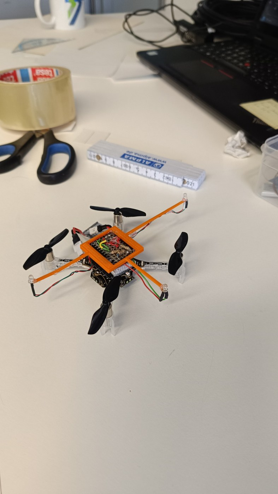

01 / FOUNDATION
B.E. Electronics (Instrumentation & Control)
Thapar Institute
This degree built my foundation in electronics, instrumentation and control, connecting physical systems with the measurements used to understand them.
MECHATRONICS ENGINEER / PORTFOLIO
I'm Mahendra Singh, a mechatronics engineer bridging industrial instrumentation and robotics. I build and test computer vision, control and embedded systems.
Select a step to explore the work behind it.
Thapar Institute
This degree built my foundation in electronics, instrumentation and control, connecting physical systems with the measurements used to understand them.

Reliance Industries · 2022–2024
I worked on instrument specifications, sizing, technical documentation and vendor reviews for industrial projects.

TH Rosenheim · 2024–2026
My graduate work moved toward mechatronics and robotics, including stereo-vision drone localization, state estimation and experimental validation.

From measurements to working prototypes
I combine sensing, software and hardware, then test how the whole system performs. The drone and ball-on-plate projects show this approach in practice.
Explore selected projects ↗Hands-on engineering, from perception algorithms to physical prototypes.
Built stereo 3D tracking, three-LED attitude estimation and Kalman filtering for a mini quadrotor. Closed-loop flight control is the next phase.
Modeled and tested a camera-observed, servo-actuated plate. Compared observer and Kalman filter approaches to estimate ball motion for feedback control.
Developed an autonomous floating-waste collection concept using vision and a collection mechanism. First place at Hacksagon 2020.
Worked on robotic hand grasp classification and sensor integration at CSIR-CSIO, using Raspberry Pi, Arduino and Python/OpenCV.
Mechatronics-focused coursework and practical engineering, including stereo-vision drone localization, automation, robotics and estimation.
Instrumentation engineering for industrial projects, including instrument specifications, sizing, schedules, technical documentation and vendor reviews.
Embedded integration, robotic hand research, image acquisition and sensor-based experimentation.
OpenCV · Stereo calibration · Triangulation · Image processing · 3D geometry
Arduino · Raspberry Pi · Sensors · UART · Electronics integration
Kalman filtering · State observers · State-space control · MATLAB / Simulink
Instrumentation design · SmartPlant Instrumentation · Instrument sizing · Technical documentation
Python · C · Git · Data processing · Test scripts
Robot prototyping · Sensor integration · Motion estimation · System testing
Interested in robotics, mechatronics, computer vision, embedded systems and engineering R&D opportunities.